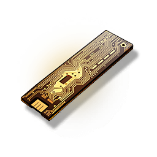

Insider Channel Key
Valuables

It can be used to unlock the Insider Channel of the Pioneer Podcast.
By completing the radio tasks, you can get generous rewards.
Standard physical key issued by the Pioneer Association for the Insider Channel.
"Welcome to the Insider Channel! Up next is the morning news express..."